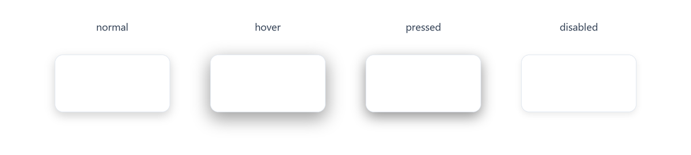

25 声明：具体改什么
19.1 颜色和状态
颜色写法支持 #RRGGBB、#RRGGBBAA、rgb(...)、rgba(...) 和常用颜色名。设计器取色器通常写出 8 位十六进制。
| 声明 | 作用 |
|---|---|
background | 背景色 |
text-color | 文字色 |
border-color | 边框色 |
text-shadow | 文字阴影颜色；alpha=0 表示关闭 |
控件状态用选择器表达，而不是在同一个规则里写四个颜色：
{ "selector": "button.primary", "declarations": {
"background": "#4A90D9", "text-color": "#FFFFFF" } }
{ "selector": "button.primary:hover", "declarations": {
"background": "#6AA3FF" } }
{ "selector": "button.primary:pressed", "declarations": {
"background": "#3B73D1" } }
{ "selector": "button.primary:disabled", "declarations": {
"background": "#2B3038", "text-color": "#9AA7B8" } }支持 :hover、:pressed、:disabled、:selected。其中 :selected 当前近似使用 pressed 通道。
19.2 字体和圆角
font-family：字体枚举名，例如harmonyos-sans-sc-regular。font-size：字号 px。font-style：normal / bold / italic / underline / strikethrough。border-radius：圆角 px。
没有显式字体声明的控件会沿父链继承最近的主题字体；属性面板显式设置的字体/字号会覆盖主题。
19.3 内边距
主题声明名可以写 padding 或 content-padding。它改变控件内容区，不改变外框尺寸：
padding: 8 // 四边 8
padding: "8 16" // 上下 8，左右 16
padding: "8 16 8 16" // 上 右 下 左
content-padding: { "left": 16, "top": 8, "right": 16, "bottom": 8 }可视化管理器的“内边距(上/右/下/左)”会写入 content-padding。Dialog 的旧 padding 是 Float 属性，和这里的内容内边距语义不同。
19.4 阴影
text-shadow 只需颜色；偏移由 shadow-offset-x / shadow-offset-y 控制。
box-shadow 是控件外框外的一层真实柔光阴影，用来做“卡片浮起来”的效果。它由 UICornerstone 预烘焙为阴影纹理并复用，不是每帧重复绘制；blur=0 保持硬边，blur 范围 0~64，spread>=0。阴影不覆盖内容、不改变布局和命中。
| 字段 | 含义 | 示例 |
|---|---|---|
color | 阴影颜色，最后两位是透明度；alpha=0 表示关闭 | #00000066 |
offset-x | 水平偏移；正数向右 | 0 |
offset-y | 垂直偏移；正数向下 | 6 |
blur | 真实柔化半径；0 为硬边 | 16 |
spread | 阴影向外扩张量；正数更大 | 0 |
hover / pressed / disabled | 状态覆盖对象；缺省字段继承 normal，状态 color alpha=0 关闭该状态阴影 | {"blur":24} |
在规则列表选中要加阴影的规则，例如 panel.card，先给它一个浅色背景，再在“box-shadow”输入框中粘贴完整对象文本：
{ "selector": "panel.card",
"declarations": {
"background": "#FFFFFF",
"box-shadow": {
"color": "#00000066", "offset-x": 0, "offset-y": 6,
"blur": 16, "spread": 0
}
} }点击“应用”或切换到别的规则，保存这条规则；在预览中查看卡片外框是否出现柔和阴影。
柔光阴影在深色背景上对比度较低；本文示例与截图使用白色背景，实际项目请保证阴影色与背景有足够对比。
状态阴影
柔光阴影支持 hover / pressed / disabled 三种状态。状态对象是部分覆盖：只写需要变化的字段，其余字段继承 normal。可以直接在 normal 对象里嵌套状态，也可以用状态选择器单独声明；两者都写入同一个状态槽。
{ "selector": "button.primary",
"declarations": {
"box-shadow": {
"color": "#00000033", "offset-x": 0, "offset-y": 6, "blur": 12,
"hover": { "color": "#00000055", "offset-y": 10, "blur": 20 },
"pressed": { "color": "#00000066", "blur": 24 },
"disabled": { "color": "#00000022", "blur": 6 }
}
} }
{ "selector": "button.primary:hover",
"declarations": {
"box-shadow": { "color": "#00000055", "offset-y": 10, "blur": 20 }
} }
规则与优先级：
- 状态字段缺省时继承 normal；状态
color显式 alpha=0 表示该状态关闭阴影。 - 优先级：显式 JSON 状态 > 主题状态 > 显式 JSON normal > 主题 normal。
- 同一状态同时写状态对象和拆散键时，拆散键优先；状态选择器内的
box-shadow再嵌套状态键会被忽略并诊断。 :selected等同 pressed；状态选择器与状态对象写入同一状态槽。- 主题切换会重算状态槽；
ApplyTheme("{}")/ 仅变量主题是 no-op，不清阴影。normal 未声明字段沿用旧主题值，整体移除需显式 alpha=0 或完整覆盖。
属性面板中的“轮廓阴影”组也提供 normal + hover/pressed/disabled 状态子组，见 属性面板。支持范围：普通控件、Popup/ConfirmPopup/Dialog/MenuBar 支持四态；MenuPanel 支持 normal；ContextMenu/MenuItem/HandleControl 不绘制 box-shadow。
Shape 的特殊边界：V1 的 box-shadow 只按 Shape 控件的包围盒 rect 绘制，不沿 polygon/polyline 点集或 circle/ellipse 轮廓发光。圆形/多边形的阴影是矩形/圆角矩形光晕；轮廓发光不在本版本范围。详见 图片、动画与绘制。
0 6 16 #000 简写。管理器提供轻/中/强阴影三个可编辑预设，也可以手动输入；不是合法对象、含未知字段或数值字段不是数字时，会提示错误并阻止保存。19.5 控件专有属性
规则也可以写控件自己的属性键，例如：
{ "selector": "list-view", "declarations": {
"header-background": "#202838", "font-size": 14 } }
{ "selector": "progress-bar", "declarations": {
"progress-color": "#22C55E" } }值会按形态尝试颜色、数字或字符串，最终落到控件对应的属性通道。具体键以属性面板和 schema 为准。